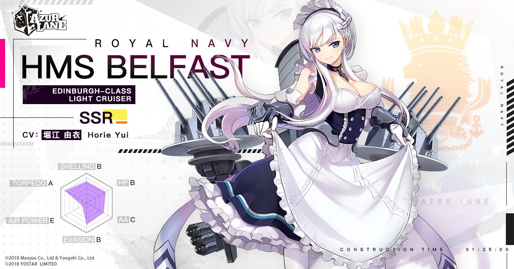

Belfast

| Belfast is one of the main protagonists in Azur Lane.
Her real counterpart is HMS Belfast, now a museum ship. She is a light cruiser for Royal Navy.
She can be built in any construction pool.
As a playable character, Belfast is the head maid of Royal Navy, always at the orders of the
commander and her Majesty, Queen Elizabeth. She is almost obsessed by her maid duty. |